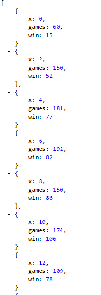

DoTA is an online game under the MOBA genre, Multiplayer Online Battle Arena. A brief game walkthrough for the unintiated players; DoTA is a 5v5 Defense of The Ancient. Everyone controls one of over 100 heroes. You progress through the game by killing neutral creeps to gain gold and experience, which in turns provides you with levels to advance your heroes skills as well as a form of currency to buy items that make your heroes stronger. Throughout the game you are constantly clashing with the other team to take their Towers down ( simliar to tower defense) until one of the two teams is able to take the other team's Ancient which triggers end game conditions.
OpenDota API, which I will refer to short-hand as OD or OD API, provides the user with a tool to pull a lot of information from specific DoTA games. The API uses all GET methods. If you went through the in-depth section I linked above the next section will make more sense. The OD API provides a data dump to put it simply. It can return account stats if you provide the correct parameters. Match stats can also be returned, and this is truly a data dump. It will provide you coordinates of all wards (game item that provides visions) placed during the game, it also documents all chat that was sent during game, heroes picked , items picked up from heroes, heroes gold per minute , creep kills , towers taken and so on. What you do with the data or parsing the data is what I plan on focusing on with this How-to OpenDota API guide.
First thing you'll need is to do one of two things. If you have a steam account we will need to convert your SteamID64 into a Steam3ID to be used with the OD API, if you do not have one skip down and I will provide you with one to use while we walk through the tutorial. When you login to Steam, it will redirect you to your steam community home page. The url will look similar to this where the X's could be any length of numbers representing your SteamID64 numbers:
http://steamcommunity.com/profiles/XXXXXXXXXXXXXXX/home
You will want to copy the page URL, and then proceed to SteamRep.This site will do the conversion for you. Paste your URL into the search box and click Search:
After you submit your search it will send you to this page below:
The Steam3ID value is what we are interested in. It will come in a U:1:XXXXXXX format, you will want to copy and paste the numbers in the X's position and save it for later.
If we take a look at the OpenDota API documentation,you will see (when the window is maximized) that there are lots of options to pick from on the leftside of the screen. Our main interest is in the Players tab and GET/matches function:
When you click on it, you will be given an updated webpage with basic information regarding the function, for example :
Lets dive in and take a deeper look at what is needed to get this function working properly. The Path Parameter as you can see in the picture is required. This is a piece of information you need to add into your url when sending a GET request to get a proper response from the server.
The GET /players/{account_id}/matches sends a GET request to https://api.opendota.com/api/ . We can add in our account id 44694420 and send a request to the server via: https://api.opendota.com/api/players/44694420/matches.Ultimately we are sending a command to OpenDota's servers saying "Hey, can you please fetch matches in which user: 44694420 has played in". When you click on the link the server will return an array of JSON objects, each object provides information as shown below in the response sample image:
You might ask how is this data useful? It looks like a big wall of text that just keeps scrolling and repeating itself. Well if we disect it more we could implement a filter. Let's say we're interested in only match id for the user, what can we do? On the next tab you can see what I mean. The response can get up to 500+ object indexes depending on how many games the user has played. Move onto the next tabs to see a basic implementation of the this API function.
From the previous tab we are now aware of how communication works for this method. We send a user ID in via a GET request to the server requesting a specific data field (matches). The server responds with an array of JSON objects.
Let's take a practical approach and examine how we can make this more user friendly, and how we can make the data more useful. We can create a form for the user to input.
Setting up our form, we will ask the user for their ID. We will also populate some basic parameters such as what is the limit for the search, and whether or not we will search for only won matches. We will go in depth about these fields later on, for now select as you see fit. Feel free to give the form below a spin, I've set it up to work properly. When you're ready we'll dissect the behind the scenes code that I've provided with my JSFiddle.
As you can see when you click submit, a table is populated with the Match ID's for the user ID you provided. Lets break down the HTML code real quick. It is a simple form in which I take in 3 inputs; 2 inputs are numerical and the last input is a button for whether or not you want to find only matches the user ID won. Pretty straight forward right? I also provided a new div with the ID "datapop" for data population of our GET response.
For our example I am keeping it basic and will only pull match ID data. Our first statement is to create an event listener for our "Submit" button. When the submit button is clicked we will execute the function(event) parameter. I start the function by extracting the data inputted into our form. As you can see I extract the steamID, the match limit to return, and whether or not the win only button was checked. Following that we setup our function to open a connection with the OD API server. If we look at req.open(), or what we're requesting from the API server, we see that we are requesting a GET method. Our API documentation tells us that we need the user steamID , and any query requests are tagged on after in this form "base_url?key=value&key2=vaule2". Our final URL would look like this without variable names
https://api.opendota.com/api/players/44694420/matches?limit=5&win=1Our API documentation tells us that the server sends application/JSON data back to us. But this form is originally in a string format, we need to JSON.parse(req.responseText); to convert the string into an object. I decided to create a new table and append it to an exisiting element in my webpage. I step through our JSON object and pull out the match ID and append it to the table to create a table of match IDs for our user. But as you have already noticed, the GET /players/{account_id}/matches OD API function can return more than just match ID. (Refer to the previous tab for Response Sample Image). If you wanted to you could take the match ID we've just found and use it in the : GET /matches/{match_id} : method and find out what all the data in the match is. Example Response : You might ask how do these two things tie together? You could create a website later on that would print out the match info in 1 click, instead of having the user copy and paste match ID. Similar to the previous implementation above. I could create a hyperlink at each match ID. We already coded for match_id extraction from our JSON object, instead of appending the string value for the match_id. We can create an 'a href' element where the URL combines the GET address + our_match_id, and then we can append it to the table.
Aside from sending GET request to the designated URL we can also add onto what I will refer to as the "base url" (with all required params filled in). For example in the last few tabs the base url would've been https://api.opendota.com/api/players/44694420/matches. The queries added on were limit=X, and win=X, X being an integer. We have an api function, GET /players/{account_id}/histograms/{fields}. As you can see the GET url requires our steam ID as well as the fields. But if you refer to the API documentation the function can also be used with queries. Check out the list of query params below and then move onto the next tab to examine this more in depth.
Our target function this time is : GET /players/{account_id}/histograms/{fields}. The histogram function will return histogram data, and if you've forgotten we can chart histogram data with # of occurence for "an action/data/event".
Lets break down this function : GET /players/{account_id}/histograms/{fields}. We already have our steam ID to substitue into account_id, but what is this {fields} area. It turns out fields refers to match related stats such as kills, deaths, assists, gpm (gold per min) and more. Finding out which stats populate in the histogram function is based on trial and error as there is no definitive documentation on it. This time around I am not going to create a form for implementation, but directly show the javascript coding and what data is sent and received. On top of the function url we can add on the query portion "?querykey=queryvalue". For our example I will look at the field for kills the user got, and then look at the same field but query it and limit it to search only in games from X previous days. Take a look at my JSFiddle below, feel free to mess around with it.
X stands for our variable in this case it is the Kills we got.
Using the same GET function with the histogram. We will now send a GET request with a query for the # of kills that has happened in the last 10 days. If we were using a form we could add an if/else conditional statement to detect whether or not queries were requested. This would allow us to re-use the same function that is executed when we hit submit. We would change the composition of the final URL that is sent to the API server. But in our case I will create another function with a minor change. Check out the fiddle below hit submit and see the new data to compare.